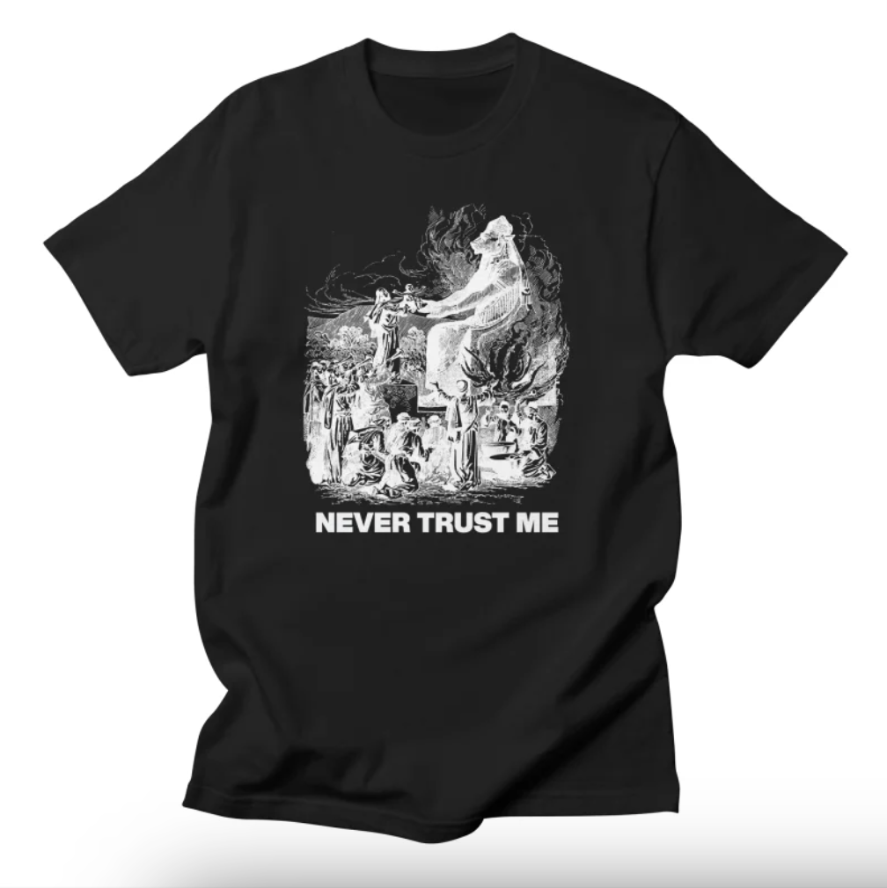
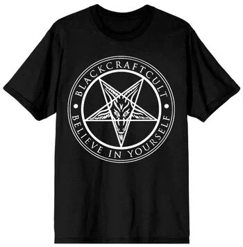

Being boring, obvious, and weird can pay dividends.
Clothing follows its own hierachy of needs not entirely unlike Maslow's famous pyramid. In its base form, it's meant to protect the wearer if the environment isn't already doing so—from the elements, from impropriety, and so on. Its purpose after that is up for debate, but can include helping to gain and maintain membership to a group, maintaining culture and customs, expressing opinions, improving physical appearance.
With this in mind, clothes should be carefully chosen for a specific purpose. The following purposes are "exercises" (of sorts) that will allow for personal development through selective choice of clothing. (Status nor expression are discussed because they are obvious.)
Wearing the plainest of clothes reduces, if not altogether eliminates, the risk of others commenting on the outfit. The plain outfit also suggests the wearer is boring.
Both of these reasons force the wearer to find other things to talk about with the observer: they have to a) initiate conversation, and b) prove they're not boring (if their ego has an issue with this). By this, their ability to initiate and hold a conversation improves as a result because they don't have anything else to use as a crutch. (Note: this is why first dates should be talking only with no extra activities.)
Want to get better at this? Start by wearing the most boring clothes as possible, especially to events where you can or will talk with strangers.
Wearing clothes that have a coded or ingroup message can result in:
Potential clothes that one could wear to encourage said connections:

The more these shirts connect with someone's identity, the more likely they are to make an impact. Something like a band shirt only offers surface-level connections.
Aschenbrenner makes a good case for wearing a weird-looking mask:
You’ll get some looks, but you’ll be better for it: it’ll steel you for the moments when having the courage to stand out really matters.
Cultivating the ability to withstand social pressure and judgment is a skill that gets better with practice. It becomes understood that others' negative judgment doesn't (always) matter. These can both be induced by wearing offensive, ugly, or weird clothes.
Potential clothes to wear:

Obviously there's a limit on how far to go: wearing clothes with holes in them, massive stains, etc. The choice should be justifiable.